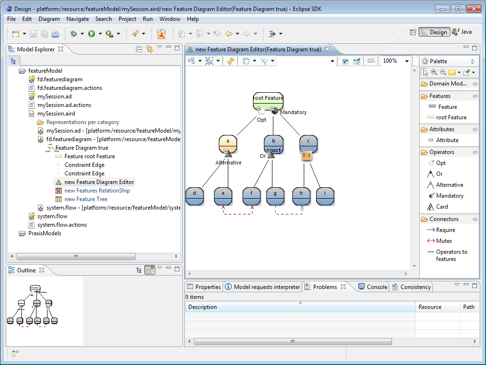
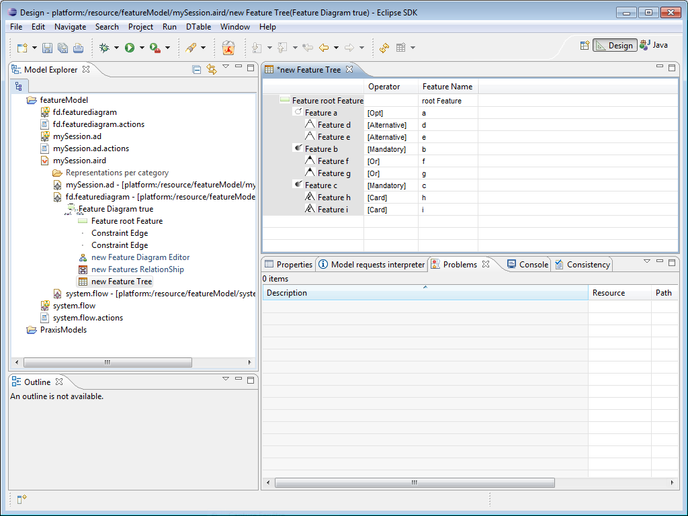
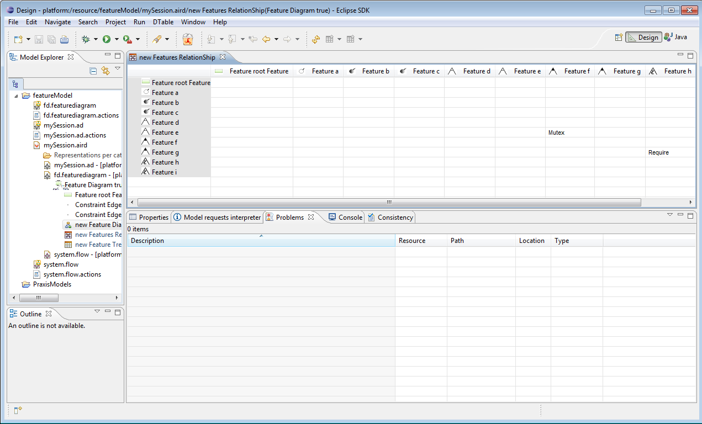

Feature Diagram Editor not contains not only a graphical representation, it also contains a tree and relationship representation (used to define what features are linked with a given mutex or require).
Fpr this part, we have added a require constraint (in blue) and a mutex constraint (in red) :

To create respectively a tree and relationship representation, right click on the Feature Diagram true (selected in the figure above) -> New Representation -> new Feature Tree (respectively new Feature Relationship).
You obtain the following in your Eclipse :

Double click on new Feature Tree. You obtain the following representation in your Eclipse :

Double click on new Feature RelationShip. You obtain the following representation in your Eclipse :

We found here a require between g and h and a mutex between e and f.
We have presented all Feature Diagram Editor Representations.The next section shows how to check Praxis constraints on the feature model.